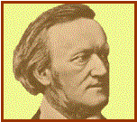

Wilhelm Richard WAGNER

|
Nace: 22-mayo-1813 en Leipzig (Alemania) |
Muere: 13-febre-1883 en Venecia. |
||
|
 |
Cuando nace Wagner su ciudad
estaba ocupada por Napoleón, que pierde la batalla de Leipzig cuando wagner
cuenta con seis meses. Una epidemia de peste se lleva a su padre, pero su
madre al poco tiempo vuelve a casarse y se trasladan a Dresde. En 1822
empieza su educación en la Kreuzschule de Dresde. En 1830 su madre lo envía a
la Thomasschule de Leipzig, donde se convirtió en estudiante de música. En el
1831 se inscribe en la Universidad. Al año siguiente decide que no necesita
más educación formal y deja la Universidad. Para entonces ya había compuesto
algunas obras. En 1834 es nombrado Director musical del Teatro de Magdeburg,
donde conoce a la actriz “Minna”, con la que se casa en 1836. En 1839 decide
probar fortuna en París, pero no tuvo suerte y trabajó de copista de música
para un editor. Regresa a Dresde en 1842, estrena “El holandés errante” y su
éxito le proporciona un puesto de maestro de capilla de la Ópera de Dresde en
1843. Pero debido a sus deudas, huye en 1849 a Weimar para evitar la cárcel.
En 1855 viaja a Londres para dirigir una serie de conciertos. En 1866 muere
su esposa Minna, volvería a casarse en 1870. En 1876 se termina de construir
el teatro Bayreuth y se realiza la primera representación de la tetraligía
completa de “El anillo del nibelungo”. Para hacer frente a los gastos se va a
Londres a dirigir una serie de conciertos en el Royal Albert may en 1877.
Murió de un ataque al corazón. |
Obras principales: Óperas: -El
holandés errante. (Chorus of
Norwegian Sailors). -Tannhäuser. -Lohengrin.
(Bridal Chorus). -El
anillo del Nibelungo: -
El oro del Rin. -
La Walkyria. (Ride of
the Walkyrie). -
Sigfrido. -
El ocaso de los dioses. -Tristán e Isolda. -Los maestros cantores de
Nuremberg. -Parsifal. (Mein Vater). Orquestales: -Sinfonia en Do. -Obertura de concierto en Re
menor. -Obertura “Cristóbal Colón”. -Obertura “Rule Britannia”. -Obertura “Polonia”. -Obertura “Fausto”. -Obertura “Kaisermarsch”. -Obertura “Marcha del Centenario”. Música de cámara para piano: -Sonata en Si bemol. -Álbum sonata en La bemol. -Hojas de álbum en La bemol y
en Do. Canciones: -Siete canciones del Fausto de
Goethe. -Der Tannenbaum (El abeto). -Los dos granaderos. -Los adioses de María Estuardo. -Wesendonk Lieder. Corales: -Saludo de consagración. -Sobre la tumba de Weber. -La fiesta de amor de los
Apóstoles. |
|
|
Podemos encuadrar a
este autor dentro del ROMANTICISMO
|
|||